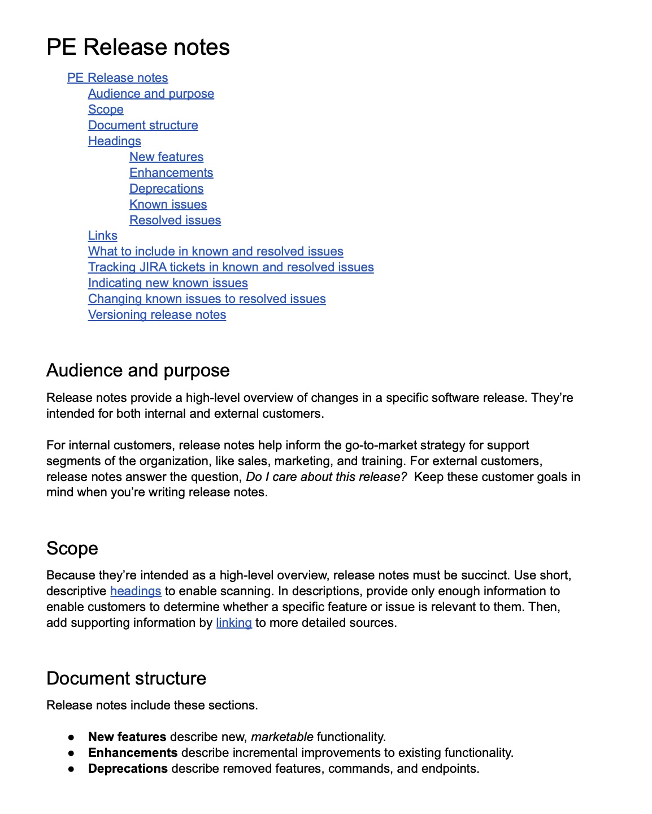
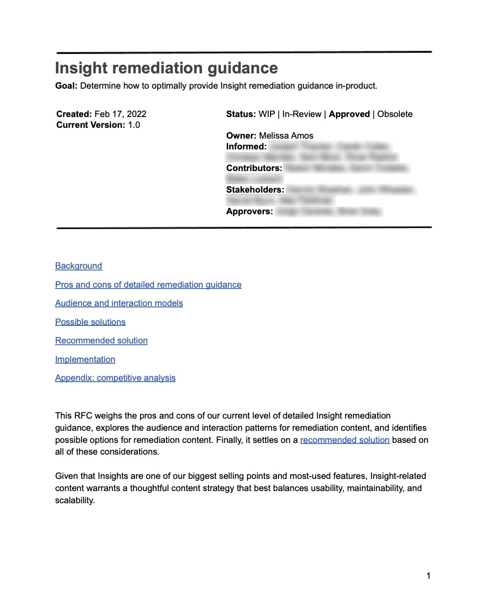
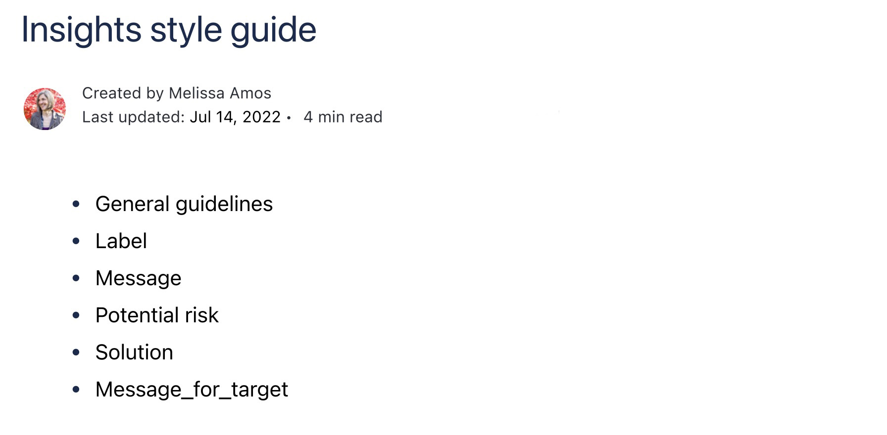
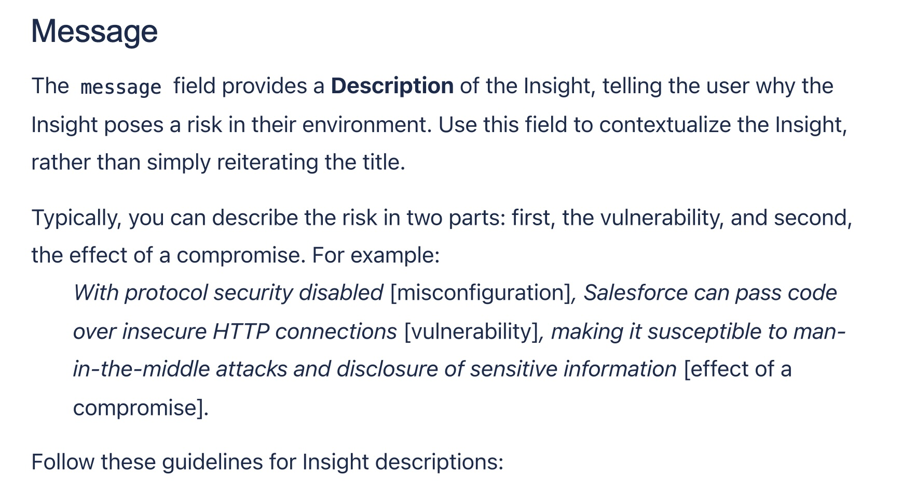

Documentation leadership
Documentation leadership transforms reactive content production into strategic organizational capability. I establish release operations, lead strategic content initiatives through structured evaluation, and own critical documentation programs that ensure comprehensive coverage while developing team capacity.
Leading critical documentation programs (Puppet)
As the lead writer for Puppet Enterprise, the company's flagship commercial product, I owned end-to-end documentation, ensuring comprehensive feature coverage, coordinating release and publishing activities, and mentoring and editing junior writers. I also embedded with the Installer engineering team and personally authored critical documentation sections including installation, upgrading, system requirements, and disaster recovery. My work built documentation capacity while maintaining quality standards.
📥 Download: Puppet Enterprise 2021.2 — Puppet Enterprise documentation, which I led and co-authored.
Establishing systematic release operations (Puppet)
Without release notes processes, product releases had inconsistent documentation quality and ad-hoc bug tracking that created confusion about issue status. I established comprehensive release notes standards defining content requirements, quality guidelines, and production workflows. I designed a label-based tracking scheme in Jira that enabled bugs to flow accurately from known issues to resolved issues through the release lifecycle. This approach reduced release notes production time while improving content quality and stakeholder satisfaction. I've since implemented these same frameworks at AppOmni and Instabase, demonstrating process portability across organizations and product types.

Release notes guidelines establishing format and quality standards.
Leading strategic content initiatives (AppOmni)
Without a structured process for major content decisions, competing priorities and stakeholder concerns were evaluated inconsistently, making it difficult to align cross-functional teams. I created a Request for Comments (RFC) process that enabled systematic evaluation of content challenges, potential solutions, audience needs, technical constraints, and implementation tradeoffs, with clear recommendations and supporting rationale. This process often led to detailed tactical guidance, such as a comprehensive style guides covering security Insights documentation.

Example RFC analyzing content approach for a key product feature: Insights.

Insights style guide table of contents.

Insights style guide voice and tone guidelines.
Business impact
- Built team infrastructure, supporting organizational scaling beyond single-writer capacity.
- Achieved 100% documentation feature coverage across rapid product development.
- Reduced release documentation production time while improving quality and consistency.
- Created standards adopted by Product, Engineering, and cross-functional teams.
- Transformed ad-hoc content decisions into systematic evaluation frameworks.
- Prevented costly late-stage content iterations through upstream decision frameworks.